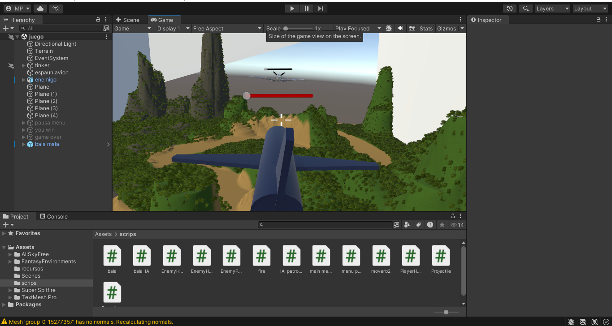
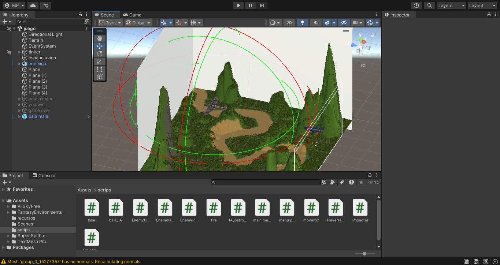
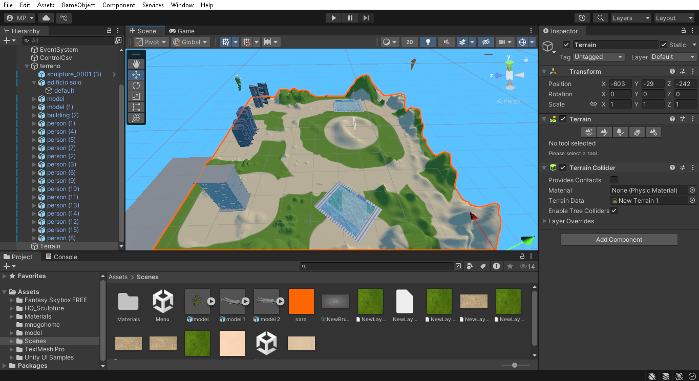

Desarrollo de videojuegos 2D y 3D utilizando Unity y C#.
Temas
Escenas, cámaras y física básica.

En este proyecto se utilizo mas que todo la posicion de la camara por que el juego(simulador de aviones)es a primera persona, gracias a la herramienta de Camara.
Diseño de mapas y niveles.

Para el simulador de aviones diseñamos un mapa o nivel donde el objetivo es destruir un avion enemigo, despues de destruir 5 aviones pasas de nivel.
Recreacion de cavo cañaveral.

En este proyecto hicimos un simulador de un globo aerostatico que va a la atmosfera. Esto fue posible gracias a los datos que recolectamos en Cube In Space.